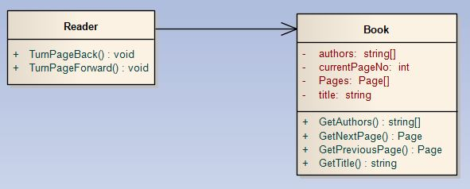
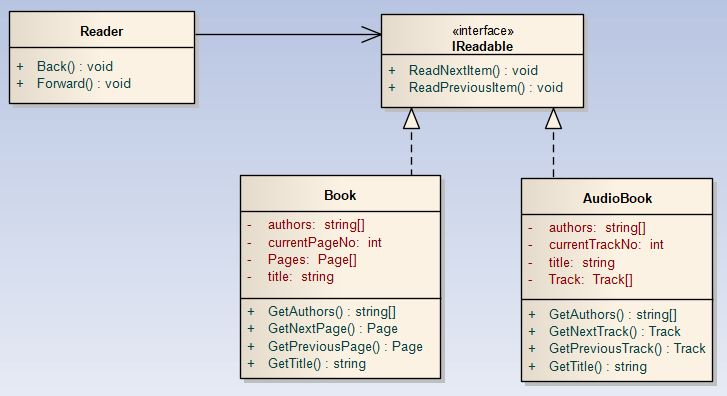
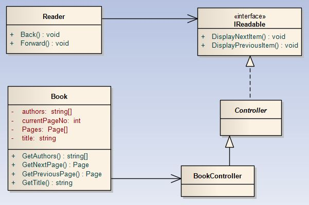
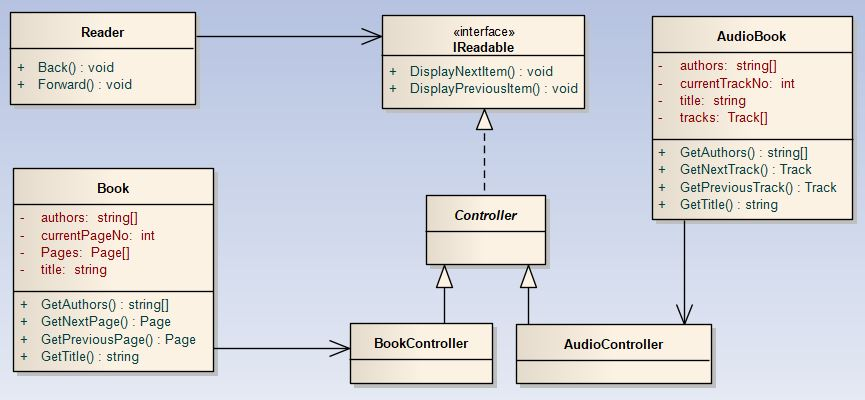
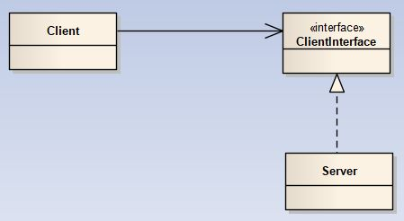

SOLID principai apibrėžia tvarkingo, lengvai palaikomo objektinio projektavimo principus. SOLID trumpinys yra penkių principų santrumpa:
S - Single-Responsibility Principle (SRP)
O - Open/Closed Principle (OCP)
L - Liskov Substitution Principle (LSP)
I - Interface Segregation Principle (ISP)
D - Dependency-Inversion Principle (DIP)
Šiame skyriuje panagrinėsime šiuos principus, kurių laikantis programinės įrangos palaikymas, programuotojo atžvilgiu, yra nesudėtingas procesas, o funkcionalumo praplėtimas nesugriauna jau esamos infrastruktūros.
Pagal vienafunkciškumo principą (angl. single-responsibility) turi būti tik viena priežastis keisti, modifikuoti klasę, pasikeitus reikalavimams programinei įrangai. Panagrinėkime pavyzdį. Duota Book klasė (1 pav.):
Duotame pavyzdyje klasė Book turi dvi atsakomybes ir, tuo pačiu, dvi priežastis dėl kurių ją gali reikėti keisti. Pirma atsakomybė yra valdyti su knyga susijusią informaciją, o kita - atvaizduoti informaciją (metodai DisplayNextPage() ir DisplayPreviousPage()). Vienos atsakomybės reikia atsisakyti, perkeliant ją kitai klasei. Šiuo atveju, puslapio atvaizdavimą iškelsime į kitą klasę, kurią pavadinsime Reader, o klasėje Book paliksime tik duomenų apie knygą valdymą. Klasių tarpusavio ryšys pavaizduotas 2 pav.
 2 pav. Ryšys tarp Book ir Reader klasių.
Šiuo atveju, Book klasė grąžina reikiamą atvaizduoti puslapį, o Reader klasė jį atvaizduoja. Pagal dabartinę schemą, kiekviena klasė turi vieną ir tik vieną paskirtį, tuo pačiu ir priežastį dėl kurios jas reikėtų keisti: Reader klasę dėl atvaizdavimo, Book - dėl atvaizduojamosios informacijos.
1. Book book = newBook(...); 2. Reader reader = newReader(book); 3. reader.TurnPageForward();
Pavyzdyje matome, jog kiekviena klasė yra atsakinga tik už vieną dalyką. Jei reikia pakeisti atvaizdavimo stilių, tai modifikuoti reikės klasę Reader, nes joje aprašyta kaip bus atvaizduojama informacija, o jei reikės pakeisti atvaizduojamą informaciją, tai reikės keisti klasę Book, nes joje aprašytas duomenų pateikimas.
Daugiau informacijos apie Single-Responsibility principą:
Pagal Open/Closed principą programos dalys (klasės, moduliai, funkcijos) turi būti „uždarytos” modifikavimui, bet atviros funkcionalumo praplėtimui.
„Atviros funkcionalumo praplėtimui” reiškia, kad funkcionalumas praplečiamas, kuriant naują programos dalį esamos dalies pagrindu.
„Uždarytos modifikavimui” reiškia, kad funkcionalumas praplečiamas nemodifikuojant esamos infrastruktūros.
Pratęskime nagrinėti pavyzdį, pradėtą nagrinėti 17.1 skyriuje. Pisiminkime, jog ankstesniame skyrelyje atskyrėme klasių atsakomybes bei jų paskirtis ir gavome klasių tarpusavio schemą pateiktą 3 pav.
3 pav. Ryšys tarp Book ir Reader klasių.
Pateiktoje klasių diagramoje (3 pav.) matome, jog klasių tarpusavio ryšys, jų funkcijos atitinka vienafunkciškumo principą (angl. Single-Responsibility Principle). Tačiau duotoji diagrama neatitinka, šiame skyrelyje aptariamo, Open/Closed principo, nes jei norėtume praplėsti funkcionalumą dar kitos klasės objekto, pavyzdžiui AudioBook, skaitymu, reikėtų modifikuoti Reader klasę, pritaikant ją to objekto informacijai skaityti.
4 pav. Patobulintas ryšys tarp Book ir Reader klasių.
Sprendimo pagrindas - atsisakyti tiesioginio ryšio tarp klasės reprezentuojančios klasę ir representuojamosios klasės. Diagramoje matome, jog neliko tiesioginio ryšio tarp Reader ir Book klasių, o panaudotas tarpininkas IReadable interfeisas per kurį bus sukurta sąsaja tarp šių klasių. Kadangi klasė Book realizuoja IReadable interfeisą, tai jos metodai ReadNextItem() ir ReadPreviousItem() bus prieinami klasei Reader.
Kai turimas toks klasių tarpusavio ryšys, naujų klasių pridėjimas į projektą nereikalauja didelių pokyčių kitose projekto dalyse. Pridėkime naują klasę AudioBook (5 pav.).
 5 pav. Ryšys Book ir AudioBook klasių su Reader klase.
1. classAudioBook : IReadable 2. { 3. private string[] authors; 4. private string title; 5. privateTrack[] tracks; 6. private int currentTrackNo; 7. 8. // Įprasti AudioBook klasės get metodai 8. public string[] GetAuthors() 9. { 10.return authors; 11.} 12. 13.... 14. 15. // IReadable interfeiso metodų realizacijos 16.public override void ReadNextItem() 17.{ 18.currentTrackNo++; 19.// Kodas garso takeliui įgarsinti 20.} 21. 22.public override void ReadPreviousItem() 23.{ 24.currentTrackNo--; 25.// Kodas garso takeliui įgarsinti 26.} 27.}
Klasė Main:
1. Book book = newBook(...); 2. AudioBook audioBook = newAudioBook(...); 3. Reader bookReader = newReader(book); 4. Reader audioReader = newReader(audioBook); 5. 6. // book ir audioBook skaitymas per bookReader ir audioReader objektus 7. bookReader.ReadNextItem(); 8. audioReader.ReadNextItem(); 9. bookReader.ReadPreviousItem(); 10.audioReader.ReaPreviousItem();
Pagalvokite, (1) kaip dar būtų galima patobulinti 5 pav. schemą ir (2) ar 5 pav. schema atitinka vienafunkciškumo principą, jei ne, tai kaip ją patobulinti, kad atitiktų.
Pateiktoji schema netenkina vienafunkciškumo principo. Patobulinimai pateikti 5a pav.
 5a pav. Schema, tenkinanti Single-Responsibility ir Open/Closed principus.
BookController klasėje apibrėžiamos operacijos su Book klasės objektu, o klasė Book saugo informaciją apie patį objektą. Prijungiant kitą elementą, reikia sukurti atitinkamą kontrolerį ir klasę reprezentuojančią tą elementą (5b pav.).
 5b pav. 5a schemos praplėtimas nauju elementu.
Bendra Open/Closed principo realizavimo scema pateikta 6 pav.
 6 pav. Bendra Open/Closed principo realizavimo schema.
Barbara Liskov 1988 m. suformulavo principą, kuris sako, kad kiekvieną bazinės klasės objektą pakeitus poklasės objektu, programos elgsena privalo nepakisti. Panagrinėkime pavyzdį (7 pav.).
Panagrinėkime, kuo šis pavyzdys yra pažeidžiantis Liskov principą. Geometriškai, kvadratas yra stačiakampis, tačiau šiuo atveju objektiniame programavime taip nėra. Panagrinėkime kodą.
Pateiktame pavyzdyje matome Liskov principo pažeidimą, kvadrato atveju, nes nustačius plotį 9, ilgį 5 gauname 25, nors pagal bazinę klasę turėtume gauti 45. Taip nutiko, nes poklasėje perrašėme SetWidth metodą, kuriame iš karto keitėme abiejų atributų reikšmes, nors bazinėje klasėje keičiama tik vieno atributo width reikšmė. Metode SetHeight - taip pat.
Vengiant Liskov principo pažeidimo reikia vadovautis šiomis taisyklėmis:
1. Išankstinė sąlyga (angl. precondition) poklasėje privalo išlikti nesustiprinta bazinės klasės atžvilgiu.
2. Galutinė sąlyga (angl. postcondition) poklasėje privalo išlikti nesusilpninta bazinės klasės atžvilgiu.
3. Jei bazinėje klasėje yra nekintamų dydžių, pavyzdžiui, inicializuotų objekto konstravimo metu, tai poklasėje tas dydis privalo taip pat išlikti nekintantis per visą objekto gyvavimo ciklą.
Jei bazinėje klasėje apibrėžta, kad kintamojo reikšmė turi būti tarp skaičių 0 ir 200, o poklasėje apibrėžta, kad tarp 0 ir 100, tai bus išankstinės sąlygos pažeidimas, nes sustiprintas reikalavimas. Jei bazinėje klasėje apibrėžta, kad grąžinama teigiama reikšmė, o poklasėje leidžiama grąžinti neigiamą, tai bus galutinės sąlygos pažeidimas, nes susilpninamas reikalavimas.
Daugiau informacijos apie Liskov Substitution principą:
Atskyrimo interfeisais principas (angl. Interface Segregation Principle) sako, kad klasės neturėtų priklausyti nuo metodų, kurie tai klasei nereikalingi arba neprasmingi. Panagrinėkime pavyzdį (8 pav.).
Pateikto pavyzdžio schemoje principas pažeidžiamas tuo, kad yra tam tikrų metodų bazinėse klasėse, kurie neturi prasmės tam tikrose poklasėse. Pavyzdžiui, metodai MakeSound() ir Walk() bazinėje Animal klasėje, neturi prasmės poklasėje Shark. Metodas Fly() bazinėje klasėje Bird, neturi prasmės poklasėje Kiwi, nes šie paukščiai neskraido.
Pagal šiame skyriuje nagrinėjamą principą, bazinėje klasėje turi būti tik tie metodai, kurie būdingi ir prasmingi visoms tos klasės poklasėms. Išskirtiniai metodai turi būti prijungti per interfeisus. Panagrinėkime pavyzdį (9 pav.).
9 pav. Atskyrimo interfeisais principo naudojimo pavyzdys.
Pagal 9 pav. schemą, kiekvienas bet kurios klasės egzempliorius, bus Animal klasės egzempliorius, turintis metodus, kurie yra būdingi ir prasmingi pagal jo prigimtį ar paskirtį. Pavyzdžiui, Kiwi klasė, turės, paveldėtas operacijas iš klasės Bird (metodai Eat(), Walk() ir MakeSound()), tuo tarpu Eagle klasė, papildomai, per interfeisą IFlying, metodą Fly().
Daugiau informacijos apie Interface Segregation principą:
Priklausomybės inversijos principas (angl. Dependency-Inversion Principle) sako, kad aukštesnio lygmens moduliai neturėtų priklausyti nuo žemesnio lygmens modulių. Visi moduliai turėtų priklausyti nuo abstrakcijų. Abstrakcijos neturėtų priklausyti nuo konkrečių realizacijų, realizacijos turėtų priklausyti nuo abstrakcijų. Šio principo iliustracijai tinka 17.2 skyrelyje nagrinėta schema, panagrinėkime ją dar kartą (10 pav.).